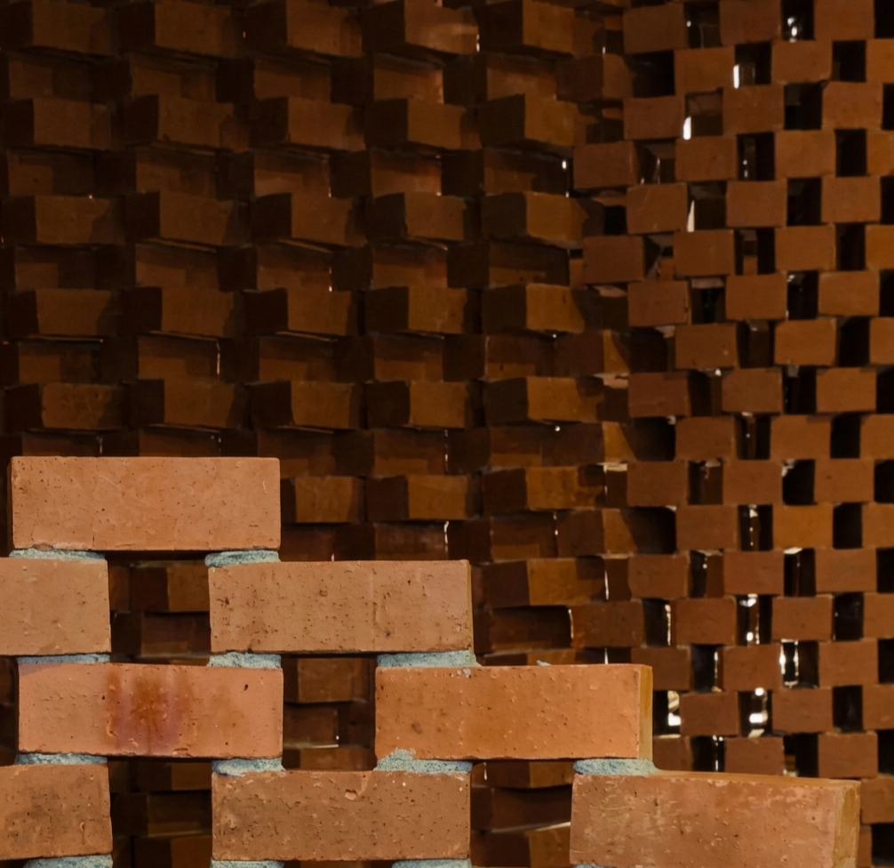
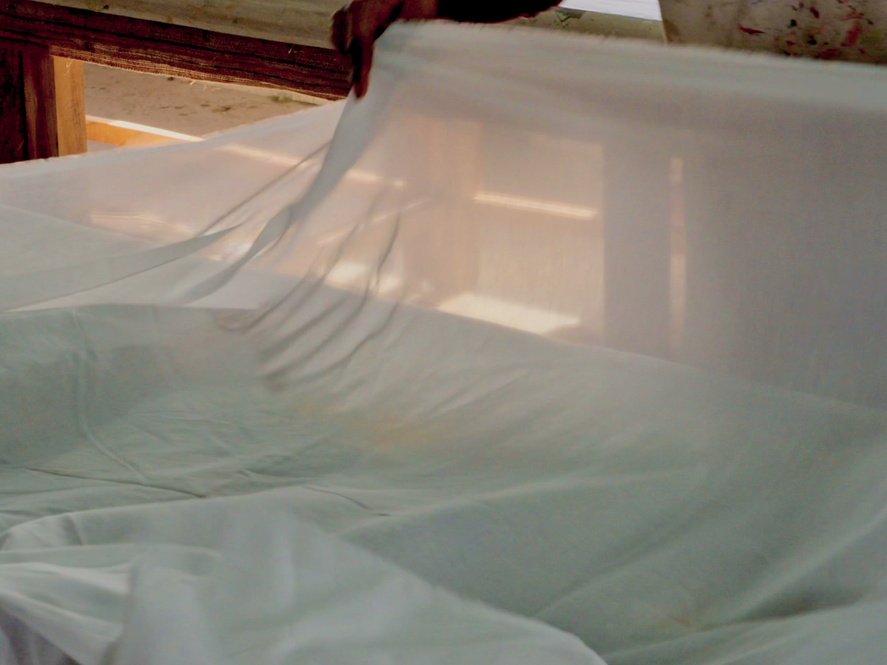
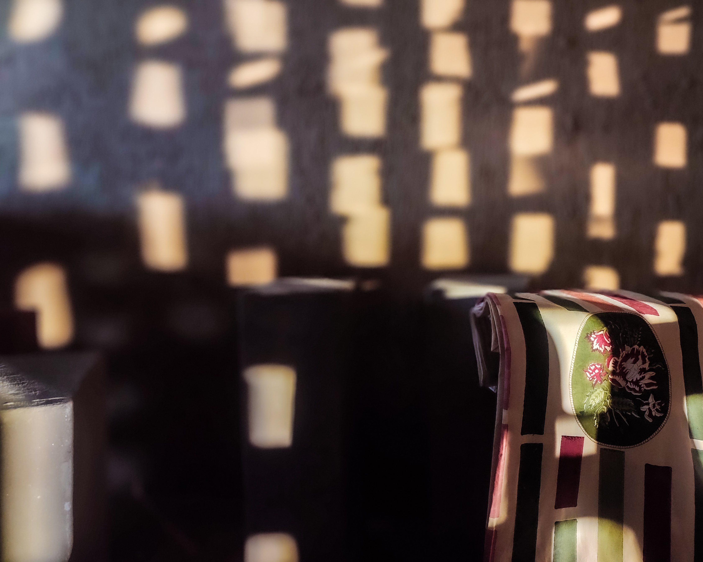
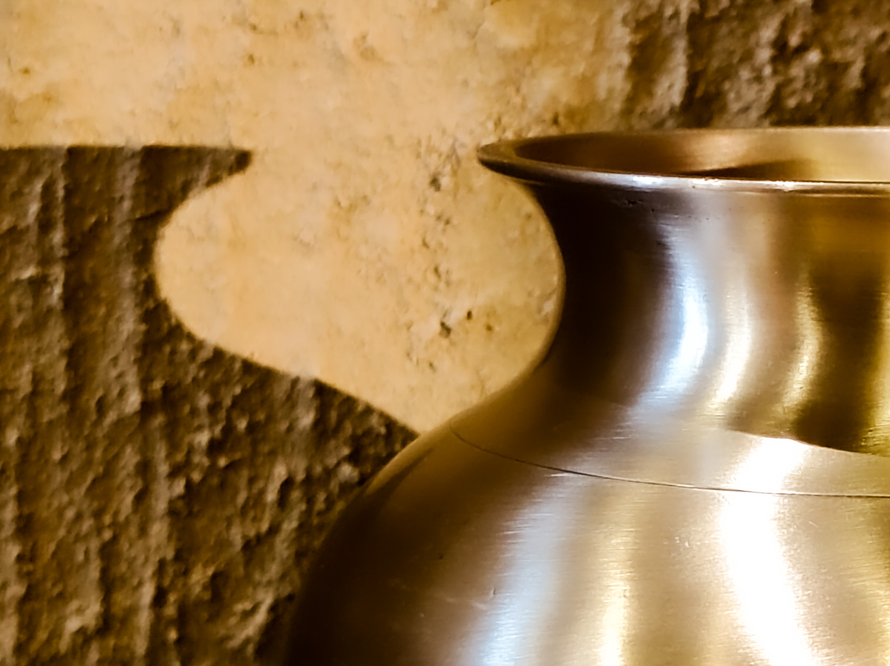

Material
DHYAI works primarily with cotton, muslin, silk, and other natural fibres. The fabrics are chosen for how they drape, how they hold shadows, and how they soften with lived experience.
Construction and surface are approached through multiple processes — hand block printing, embroidery, painting traditions, and contemporary print methods — each used in service of the object.
The current studies are not surface decoration. They are object families — bedsheets, bedcovers, dohars, table covers, table linen sets — developed through repetition, spacing, weight, and use.
Each design is a repose. It is a memory. A moment held in material.



Some objects arrive first as an image, a memory, a ritual, or a gesture.
Brass becomes the material through which they are made.
The brass develops a living patina over time. The surface deepens with use. The weight of the material is essential to its presence.
Pieces are sand-cast, lathe-finished, and satin-brushed.
Current brass work includes the Pebble Jar Set and the Kalash. Both are made for household use, gifting programmes, and custom adaptations.
